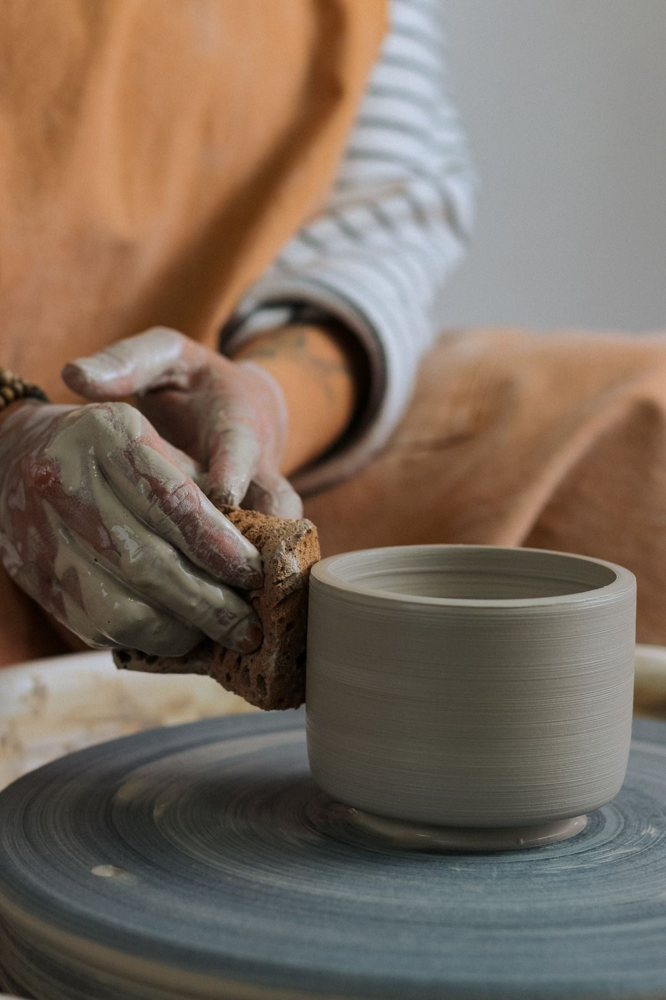

ALFAR began with a borrowed wheel and a quiet obsession with doing things slowly, and well.

It all began in a garage in the Russafa neighbourhood, with a second-hand wheel and the free evenings of a designer who wanted to work with her hands.
Twelve years later, that impulse has become a studio-shop in the heart of the Carmen, a small team of potters, and a workshop programme that has passed through the hands of hundreds of students.
We still do the same thing we always have: throwing piece by piece, unhurried, without molds, and with no two objects ever quite the same.
Every piece passes through the wheel and our potter's hands, with no mass-production molds.
Local stoneware and clays, food-safe non-toxic glazes.
Every piece is unique: small variations are proof it was made by hand.
We work in small batches, respecting the pace of clay and fire.
Five stages, several days of work, one single piece at the end.
The clay is hand-kneaded to remove air and even out the texture before it goes on the wheel.
The piece takes shape on the wheel, turning under the potter's hands, inch by inch.
It rests for several days at room temperature until it reaches just the right moisture for the kiln.
The glaze is applied by hand, piece by piece, by brush or dipping, depending on the finish.
Fired above 1,200°C, where clay is transformed into ceramic forever.
You'll find us throwing pots most afternoons. Stop by the shop or sign up for a workshop.